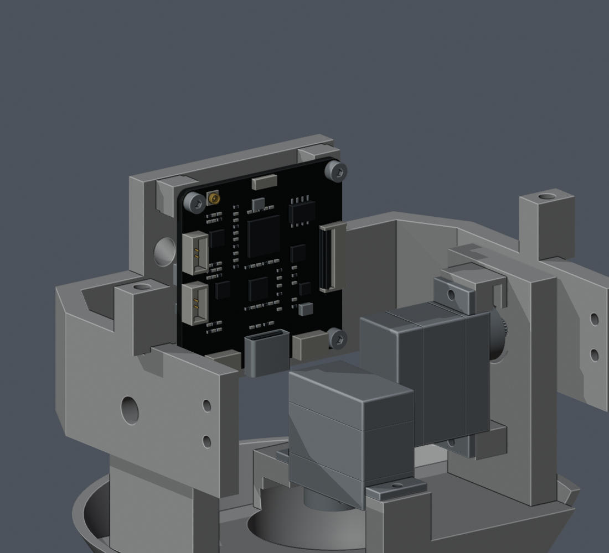
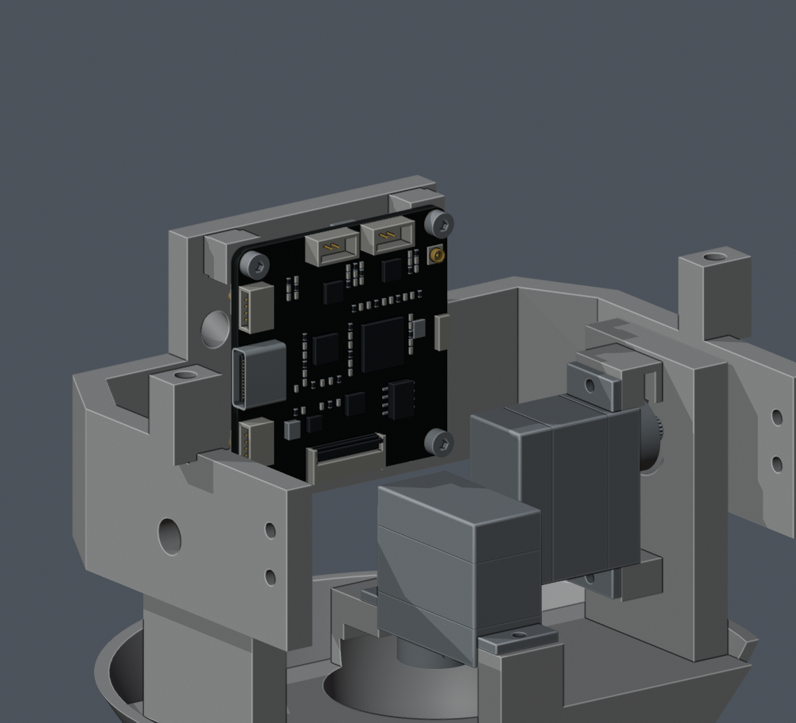

V1.2-M1.54 · 只转动 CAM 整板与板载双麦。其余 198 件保持，原固定座和四枚螺钉继续使用。
右侧指机器人自身的 +X；正面对板看时，USB 出现在画面左边。


| 接口 | 当前出口方向（头部零位） |
|---|---|
| CAM USB | 机器人右侧 +X |
| CAM 端相机 FPC | 机器人左侧 −X |
| CAM 端屏幕 FPC | 向下 −Z |
| 麦克风源通道 L / R | 分别在下 / 上；名称保留源通道身份 |
显示架与头壳后装。板卡向前错开 2 mm 下放 → 留高 8 mm，从右侧预接 USB → 下落并向后贴回固定座 → 锁四枚原螺钉。
130 个头部姿态、三种示例插头本体预留、12 条工具／螺钉路径及板卡装入路径复核通过。相机与屏幕本体位置不变。
完整线束仍需重排和验证。三种 USB 本体只是空间预留，未包含最终插头的金属鼻端、插合及软线。麦克风／RF、PA12 和实物配合尚未验证；没有制造放行。
当前 Blender 主模型 · 更新后的装配视频 · 检查范围与记录 · 当前图册